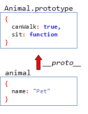

Lepší Javascript: CoffeeScript a Backbone.js
Tomáš Kramár, @tkramar
Čo vám vadí na JavaScripte?
- Škaredá a ukecaná syntax
- Musím byť stále v strehu
- Ťažko uchopiteľné OOP
- Asynchrónny model -> špagetový kód
Škaredá a ukecaná syntax
Rovnaký kód v CoffeeScripte
CoffeeScript sa kompiluje do JavaScriptu
Ako CoffeeScript sprehľadňuje JavaScript?
- Nepovinné bodkočiarky
- Skrátená deklarácia funkcií
- Nepovinné zátvorky
- Otočené podmienky
- If naruby
- Citlivý na odsadenie
Ako CoffeeScript sprehľadňuje JavaScript?
- Implicitné vytváranie hashov
- Všetko je výraz a implicitný return
- Zreťazené porovnávania
- Interpolácie reťazcov
Najväčšia zrada CoffeeScriptu
Veľké finty CoffeeScriptu
- Destructuring assignment
- Comprehensions
- Defaultné argumenty
Objektovo orientovaný JavaScript

Objektovo orientovaný CoffeeScript
- @ je skratka pre this
- Kľúčové slovo class sa postará o nastavenie prototypu a
konštruktora
- @-parametre v konštruktore sú automaticky inicializované
- Kľúčové slovo extends sa postará o nastavenie prototypovej
hierarchie
- super bez argumentov
Kontextové finty
Kontext v JavaScripte
Ochrana pred najčastejšími chybami
== je zradné, pretože robí coercion
premenná deklarovaná bez var je globálna premenná
CoffeeScript deklaruje všetky premenné v správnom lexikálnom scope
všetko je obalené v anonymnej funkcii
Backbone.js
After 15 years of spaghetti code, the JavaScript
community has finally discovered MVC
Základné komponenty Backbone
- Model
- urdžiavanie stavu aplikácie, aplikačná logika
- Collection
- kolekcia modelov, niečo ako ruby Enumerable
- View
- nič spoločné s Rails view, rendrovanie, správa udalostí
- Router
- Events
Model
Collection
- map, reduce, filter, invoke, find, reject..
View
Router
Ukážka: Document Viewer (Single-page Web application)
Rails špagety
application.js
create.js.erb
Ukážka: Ako sa vyhnúť Rails špagetám
←
→
/
#